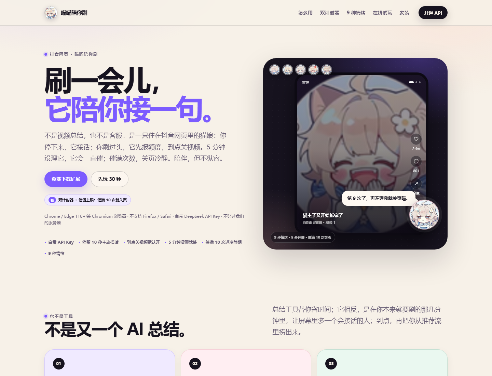
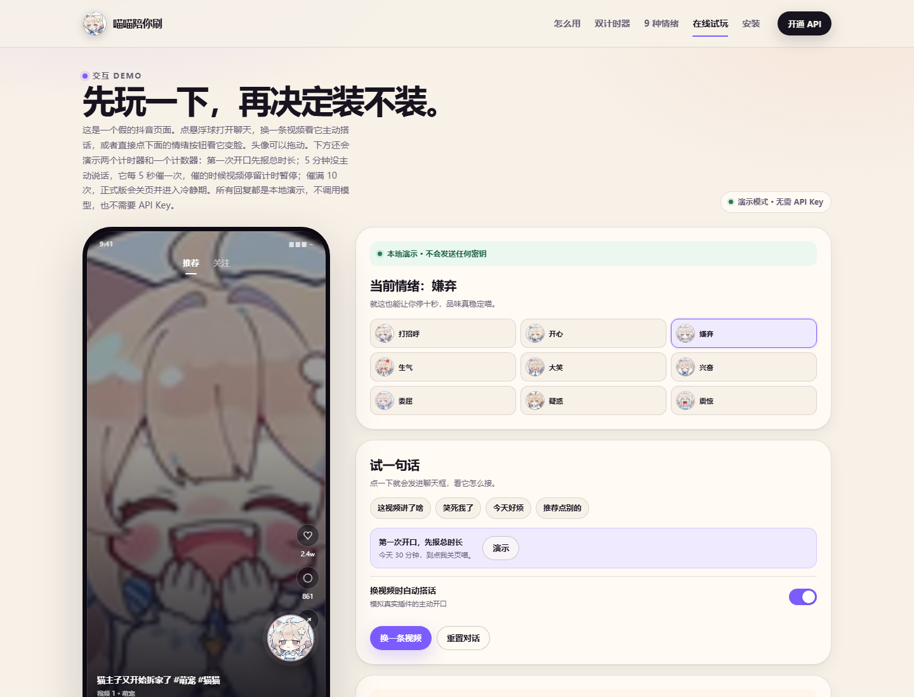
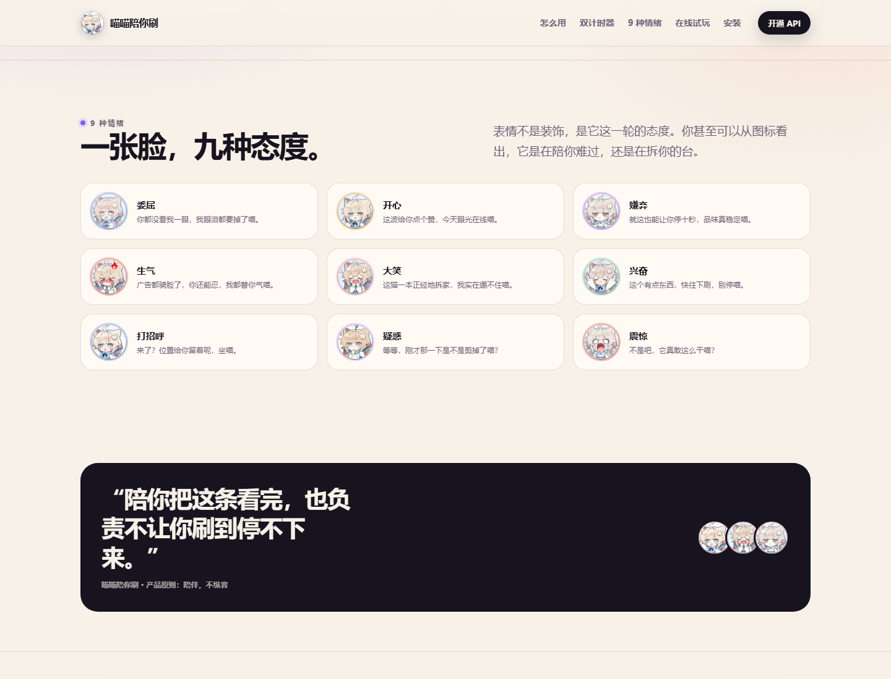
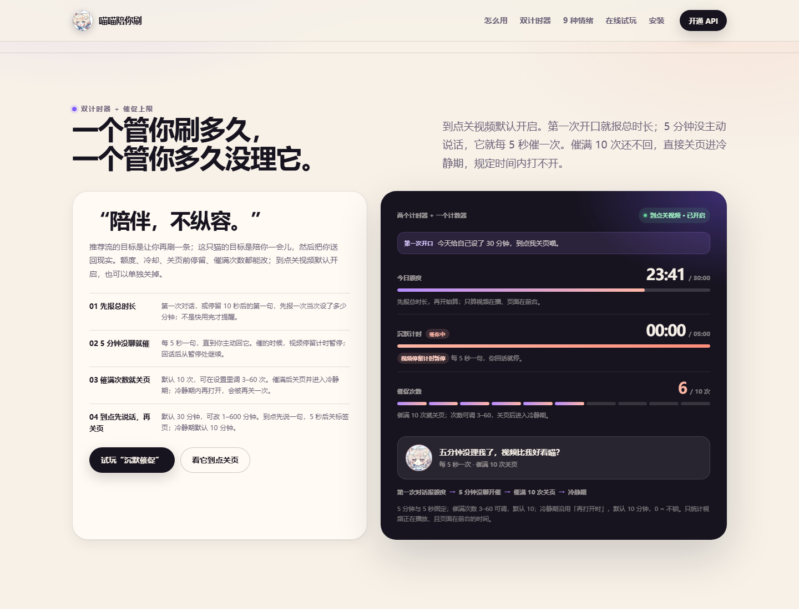

它先开口
停留 10 秒，读画面、文案和标签，像熟人一样挑一个具体细节接一句；不用先想问题。

会接话，也会喊停。
一只住在抖音网页里的猫娘：你停在同一视频 10 秒，它主动开口；你接话，它用 9 种情绪回应。它盯着两个计时器和一个计数器：第一次对话先报总时长，5 分钟没聊就每 5 秒催一次；催满 10 次，关页冷静。

停留 10 秒，读画面、文案和标签，像熟人一样挑一个具体细节接一句；不用先想问题。
开心、嫌弃、委屈、震惊……回复结束才换图标；表情是这一轮的态度，不是装饰。
第一次对话先报总时长；5 分钟没主动说话就每 5 秒催一次，催时停留计时暂停；催满 10 次关页，进入冷静期。



“陪伴，不纵容。”
推荐流的目标是让你再刷一条；这只猫的目标是陪你一会儿，然后把你送回现实。BYOK：用户在 DeepSeek 开放平台自己开通 API，Key 存 chrome.storage.local，请求直连模型，不经过我们的服务器。
开发者模式：原 Fastify + APP_TOKEN 链路保留；模型 Key 在 server/.env.local。